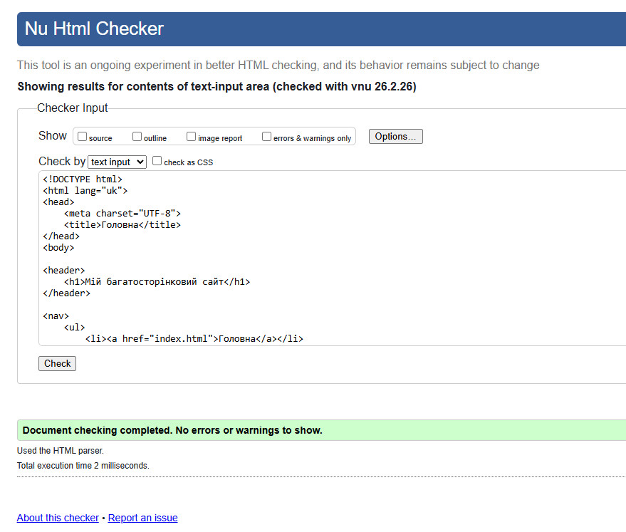
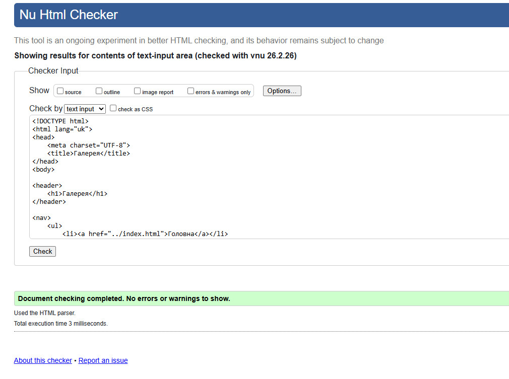
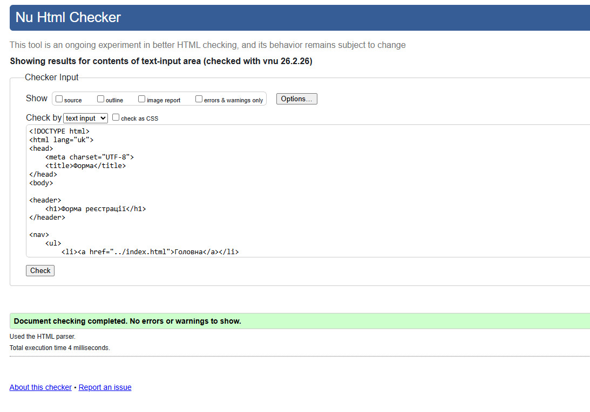
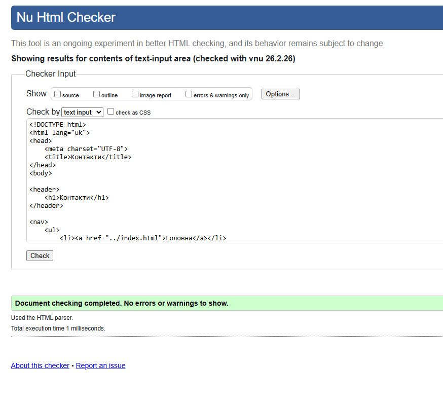
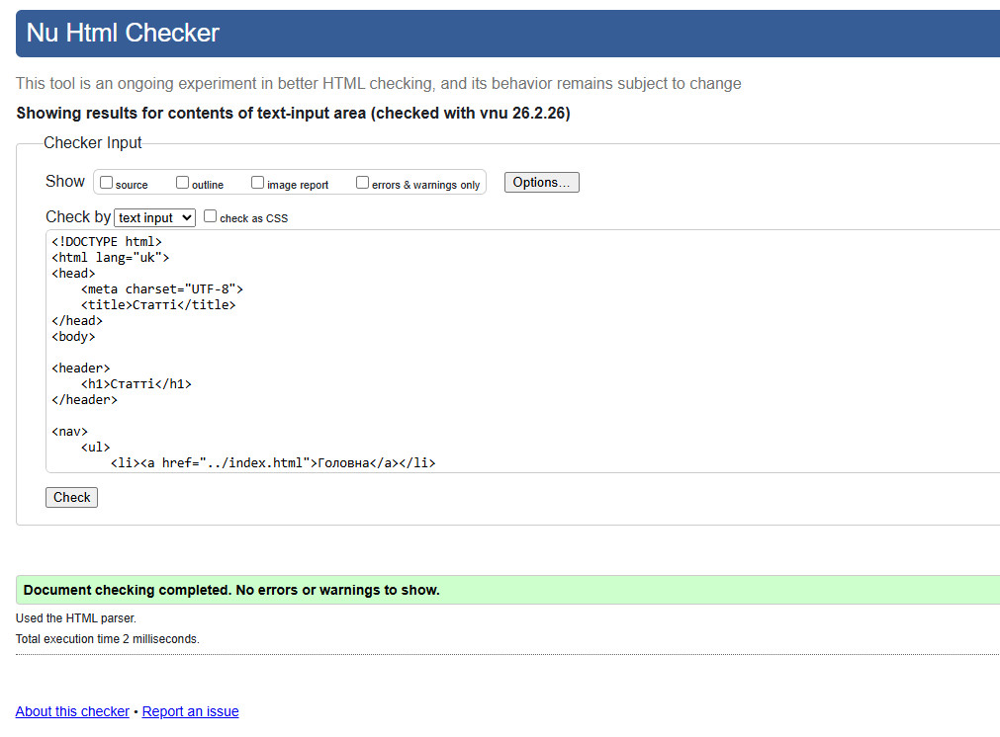
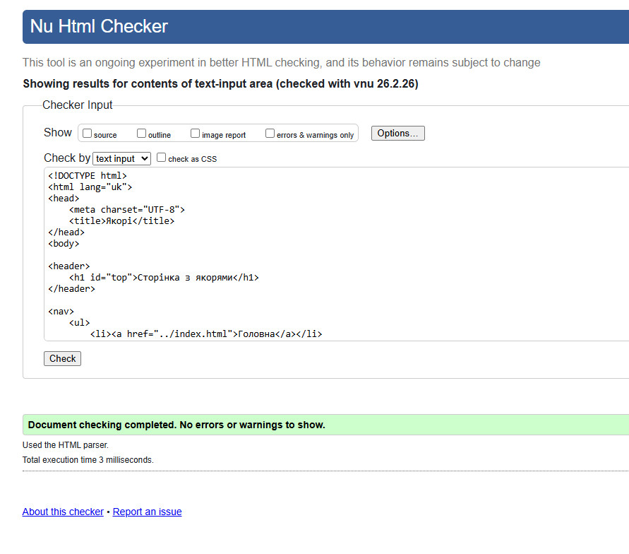

Фотографії подані впорядкованою сіткою
Для виконання вимоги домашнього завдання зображення розміщені по три елементи в рядок. Завдяки спільним відступам, карткам і підписам галерея виглядає структуровано та охайно.
Для виконання вимоги домашнього завдання зображення розміщені по три елементи в рядок. Завдяки спільним відступам, карткам і підписам галерея виглядає структуровано та охайно.

Світлий простір для ранкової кави та спокійних зустрічей.

Акцент на красиву подачу та теплі кольори у кадрі.

Солодка вітрина доповнює атмосферу затишного закладу.

Зона для відпочинку на свіжому повітрі у теплу пору року.

Затишна сервіровка підкреслює домашній характер закладу.

Невеликі вечори та зустрічі роблять простір живим і дружнім.